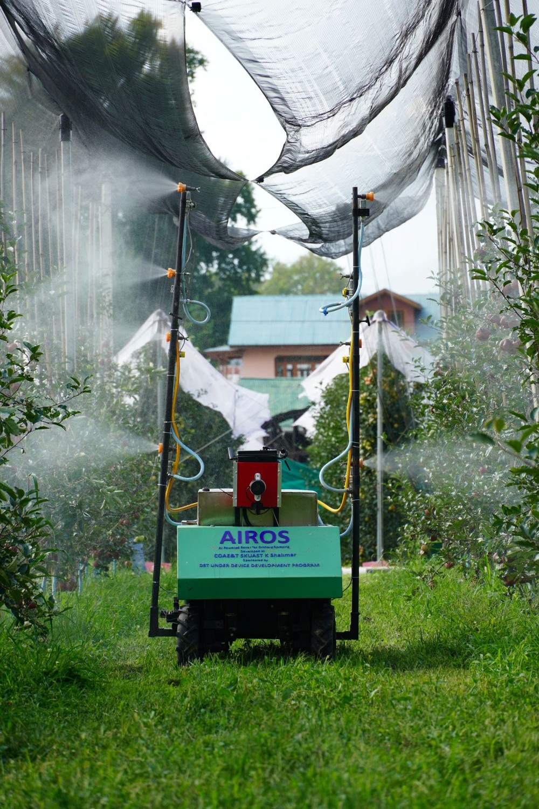
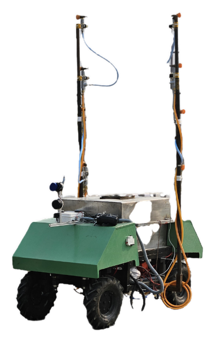
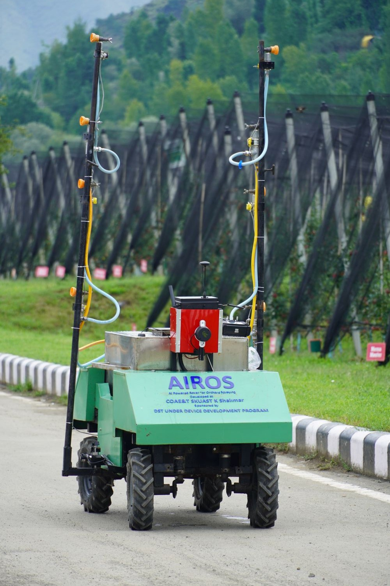

±1.5 cm Corridor Lock
Dual-antenna kinematics hold narrow trellised rows steady across damp orchard terrain.
Kashbot Agri Systems engineers autonomous field rovers, precision agricultural machinery, canopy-targeted spraying systems, and laser weed management prototypes designed for measurable, resource-conscious farming.

Kashbot Agri Systems Private Limited is an agricultural technology company focused on developing agricultural robotics, precision agricultural machinery, and intelligent automation solutions for modern farming.
We aim to help make agricultural operations more precise, efficient, and practical through the integration of engineering, robotics, sensing technologies, and intelligent control systems. Based in Buchpora, Srinagar, our work addresses high-value horticultural challenges—from high-density apple orchards to terraced terrain—replacing blanket input wastage with measurable, targeted performance.
Select any numbered subsystem marker on the chassis to inspect its field specifications.

Twin vertical aluminum spray masts fitted with individually modulated nozzles that match droplet velocity to trellised apple canopy height under anti-hail nets.
Real-time control loops bridging RTK localization, ultrasonic canopy profiling, and sub-millimetre laser optics.
Dual-antenna kinematics hold narrow trellised rows steady across damp orchard terrain.
Ultrasonic profiling fires micro-solenoids exclusively into foliage, eliminating inter-tree drift.
Edge neural vision distinguishes crop seedlings and steers mirror pulses onto weed meristems.
Autonomous robotic platforms engineered for rugged terrain, row-crop navigation, and precision field operations.
All-terrain electric drivetrain with centimetre-accurate RTK-GNSS navigation, LiDAR obstacle avoidance, and universal modular tool hitching.
Coordinated aerial-ground telemetry mapping canopy density, localized moisture deficiency, and chlorophyll levels across high-density orchards.
No robotic platforms match the active filter criteria.
Development of machinery and control systems intended to make agricultural operations more targeted, measurable, and efficient.
Micro-solenoid pulse-width modulation regulating fluid flow rates dynamically proportional to forward rover speed and localized tree canopy volumes.
Direct root-zone nutrient micro-injection driven by real-time soil optical sensor feedback to minimize run-off and nitrate leaching.
No precision machinery systems match the active filter criteria.
Smart spraying technologies for orchards and horticultural settings, using canopy sensing and adaptive control to curb chemical drift.
Ultrasonic and stereoscopic vision sensors continuously profile tree geometry in real-time, shutting off nozzles in gaps to eliminate blanket overspray.
Applies an electrostatic charge to atomized micro-droplets, forcing them to wrap around and adhere to leaf undersides for superior disease control.
No spraying systems match the active filter criteria.
Laser lawn-weeding prototype exploring targeted weed treatment as an eco-conscious alternative to blanket synthetic herbicide application.
High-speed dual-axis galvano mirror deflecting targeted thermal laser pulses directly onto weed apical meristems, rupturing cells in milliseconds.
Custom deep learning vision engine trained on diverse high-altitude Kashmiri weeds to instantly differentiate crop seedlings from invasive species.
No laser weeding prototypes match the active filter criteria.
Engineering-led development bringing together mechanical systems, electronics, sensors, embedded computing, and software.
Shock-resistant, IP67 industrial embedded compute module bridging automotive CAN buses, ROS2 robotics nodes, and real-time sensor feedback.
Solar-harvesting sensor node transmitting real-time root volumetric water content, soil EC, and canopy leaf wetness to the central farm dashboard.
No research modules match the active filter criteria.
Our robotic platforms and intelligent canopy spraying technologies undergo rigorous field evaluations in collaboration with the Division of Agricultural Engineering, COAE&T SKUAST-K Shalimar, sponsored by the Department of Science & Technology (DST).
High-pressure vertical spray masts deploying dynamic air-assisted micro-mist directly into apple canopy under protective hail netting, achieving up to 85% reduction in pesticide runoff and zero operator exposure.
Autonomous travel through narrow trellised orchard corridors utilizing dual-antenna RTK-GNSS and obstacle avoidance, handling damp valley soil and tree-support infrastructure with steady traction.

Platform CalibrationEngineered for harsh valley orchards with automotive CAN bus networking, ruggedized fluid manifolds, intelligent PWM solenoid valves, and interchangeable agricultural implement bays.
We follow a rigorous, practical, engineering-driven approach from initial field observation to controlled prototype validation.
Identify a specific agricultural problem through direct grower engagement in valley orchards and farming communities.
Develop a suitable mechanical and automation concept using CAD kinematics and finite element analysis.
Integrate relevant sensors, control systems, and computing hardware onto ruggedized electrical buses.
Build and test prototypes under defined conditions in Srinagar trial plots to evaluate real-world reliability.
Evaluate performance and refine the design iteratively before considering broader field deployment.
Evaluate the quantifiable chemical reduction, operating hours saved, and drift prevention achieved by replacing conventional broadcast machinery with targeted canopy automation.
Empirical reference: 255 Liters of chemical wastage avoided per acre/season; ~8 machine operating hours saved per acre.
Our purpose is to contribute to more efficient and technology-enabled agriculture by developing solutions that address real operational needs. We aim to bridge agricultural engineering and emerging automation technologies through practical design, testing, and continuous improvement.
To contribute to the advancement of agricultural robotics and precision machinery, helping farmers and the agricultural sector access practical, intelligent, and resource-conscious technologies.
Whether you are an orchardist seeking field trials, an agricultural institution exploring research partnerships, or a commercial distributor, our Srinagar engineering team is ready to collaborate.